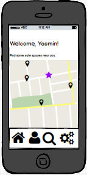

SafeNight
Created by Christina Pollais '16, Sasha Levy '15, and Steffi Lee '15
Scenarios
 Scenario #1: Yasmin
Scenario #1: Yasmin
Yasmin is a first year at Wellesley who’s just gotten off the Senate bus with two other first year friends at the second stop, the MIT student center. She rsvp’ed to a party at Phi Delts, but realizes after getting off the bus that this frat is across the river from where she is now. Yasmin and her friends see other students getting off the bus and walking around but are too nervous to ask them where to go. She hears the name “Kappa Sigma” thrown around as being close by. Instead of just aimlessly following students to the first party they see, Yasmin decides to take out her phone and check the Sspace application. She can either check the map page, which shows her current location with icons located at locations near her that have been rated, or she can just browse what’s near by. On the map, she clicks on Kappa Sigma, just a few blocks away from the student center. She sees the most recent rating, which has 2 thumbs up, and says that Kappa Sig is a great place to go on a Saturday night to meet nice, respectful young men. When she clicks on “top votes” however, there is a rating with 10 thumbs up that says that other Wellesley students have felt unsafe there. They search Phi Delts, where they were going originally, and see consistently high rated, positive comments about the brothers and the environment. They decide to go across the river to the other party. It’s farther away but worth it to feel safer. Yasmin has a great time at the party and the next day adds her own rating, saying that even though she didn’t know any of the Phi Delts, they were nice and welcoming and she felt very safe. She hopes that her message can help future first years making decision about where they should go next weekend!
 Scenario #2: Alexa
Scenario #2: Alexa
Alexa is a senior who just boarded the Senate bus from Harvard Square, after she had gone to a party in Eliot house. At the party, Alexa felt unsafe and wants to warn her fellow classmates about the specific location. She logs on to the Sspace application and searches for “Eliot house” so that she can see if others have felt the same way and post a low rating and warning comment. No results come up and she realizes that no one has posted about this location yet. Therefore, she clicks on the map icon and is directed to the map, where she presses on a specific part of the map to create a new location. Once it has been created, she posts her warning comment: “Please be careful here. I came to a party on March 15th and did not feel safe - the boys were being very aggressive” and gives it a rating of -1. Back in her dorm room the next day, Alexa logs back on the Sspace application to see if there have been any other relevant posting. She observes that more people have commented that they felt unsafe, resulting in a total rating of -5.
 Scenario #3: Anna
Scenario #3: Anna
Anna is a sophomore who is grabbing brunch with her friends on Sunday morning. They all are talking about the comments on SSpace and how true they are. Michelle is curious and wants to find out more about the application so she borrows her friend’s phone and goes through the different features. Liking what she sees, she decides to download the application and create her own account. She opens the application and is prompted with a screen that asks for her wellesley e-mail address and to input the verification code that is sent to that e-mail address. Once she inputs the code, she is able to go through all the features on her own phone and thumb-up posts that she agrees with and thumb-down those that she does not.
 Scenario #4: Michelle
Scenario #4: Michelle
Michelle is the Sspace admin. On Sunday morning, she logs on to the Sspace application to go over the reviews and comments that were posted over the weekend. She sees that many rating have gone up or down over the weekend and that there are 10 new reviews. She notices that 7 of these 10 new reviews are about Eliot house at Harvard, which had a party on Friday night. Reading the comments, she sees nothing malicious or inappropriate for the first 6. However, the last one is a comment that is responding to the other 6 in an aggressive manner, commenting on the clothes that most girls were wearing there and stating that they have no right to complain and that they were being “ungrateful” for the party. Categorizing this comment as malicious and disrespectful, she clicks on the “delete” button next to it. She also sees 2 reviews of Kappa Sigma, an MIT frat, both commenting on the great time that they had.
Designs
Design 1


Design 2



Storyboards (From Scenario#1)
Design 1 Storyboard


Design 2 Storyboard